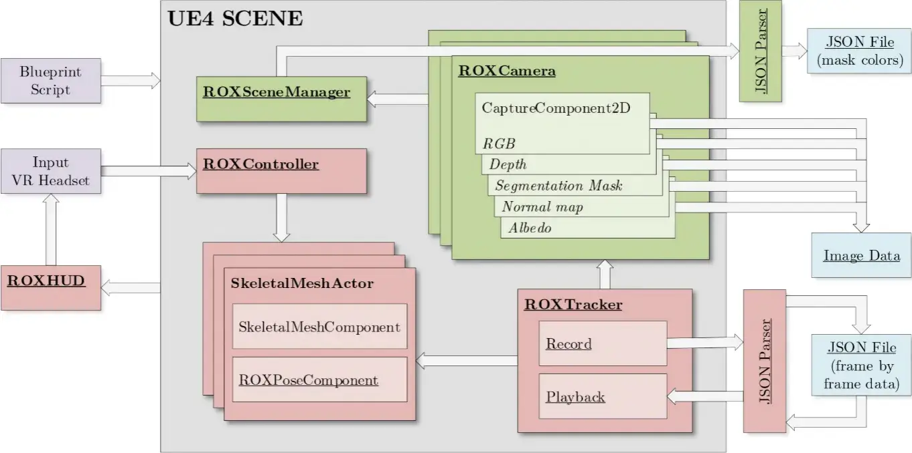
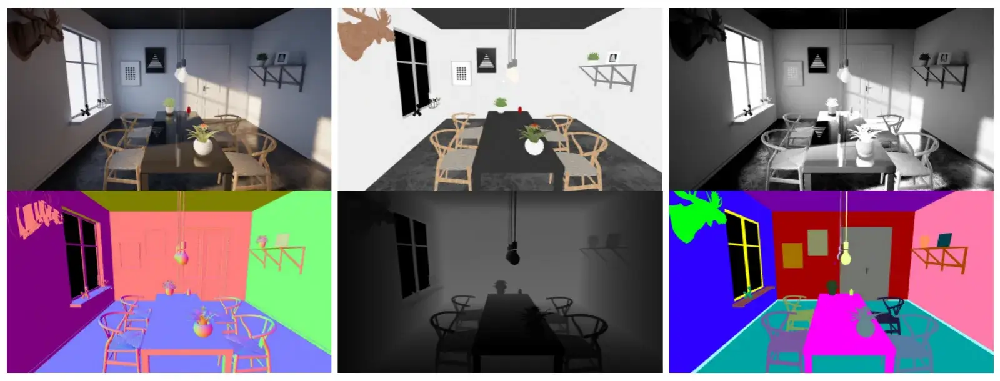
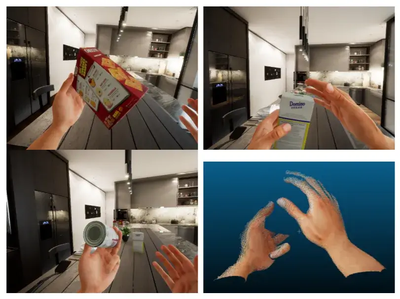
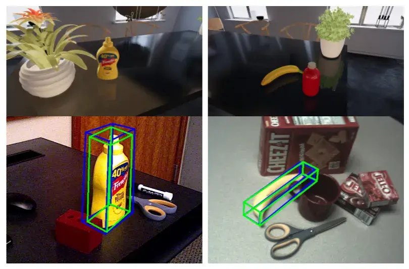

资源
- 论文：
- [[2104.11776] UnrealROX+: An Improved Tool for Acquiring Synthetic Data from Virtual 3D Environments (arxiv.org)](https://link.springer.com/article/10.1007/s11042-024-19731-6)
- UnrealROX+: An Improved Tool for Acquiring Synthetic Data from Virtual 3D Environments | IEEE Conference Publication | IEEE Xplore
正文
Abstract
合成数据生成在过去几年中已经成为数据驱动算法的关键，这些算法在几乎所有计算机视觉问题中都超过了传统技术的性能。在真实的世界中收集和标记这些数据匮乏的模型所需的数据量可能变得不可行且容易出错，而合成数据使我们有可能生成具有像素完美注释的大量数据。然而，大多数合成数据集在其渲染图像中缺乏足够的真实感。在此背景下，UnrealROX 生成工具于 2019 年推出，允许以高分辨率和帧速率生成高度逼真的数据，并具有基于尖端视频游戏引擎虚幻引擎的高效管道。UnrealROX 使机器人视觉研究人员能够为各种各样的问题生成逼真的、视觉上可信的数据，这些问题包括类和实例语义分割、对象检测、深度估计、视觉抓取和导航。然而，它的工作流程非常依赖于从机器人机载相机生成图像序列，因此很难生成用于其他目的的数据。在这项工作中，我们提出了 UnrealROX+，它是 UnrealROX 的改进版本，其解耦和易于使用的数据采集系统允许以更灵活和可定制的方式快速设计和生成数据。此外，它被打包为 Unreal 插件，这使得它更适合与现有的 Unreal 项目一起使用，并且它还包括新功能，例如生成用于与深度学习框架中的虚拟环境交互的 Python API。
Index Terms: Synthetic Data, Data Generation, Simulation, Deep Learning, Computer Vision
索引术语：合成数据、数据生成、模拟、深度学习、计算机视觉
1. INTRODUCTION
在过去的几年里，基于视觉的深度学习架构的发展已经证实了它对合成生成数据的支持，以节省大量标记图像数据的缺乏。众所周知，在真实的世界中收集具有地面实况的相关量的图像是昂贵且乏味的任务，如果在某些情况下不是不可能的话。具有强大渲染技术和引擎的虚拟环境允许生成大量可以自动标记的合成图像。
在 2018 年，Robotics 数据集作为一个综合生成的多用途机器人数据集。该数据集的主要贡献在于其提供的数据的质量和多样性，包括 RGB 图像，深度和法线图，以及 1080p 分辨率和 60 帧每秒（FPS）的实例和语义分割掩码。用于生成它的工具 UnrealROX 基于虚幻引擎 4（UE4），这是最广泛的视频游戏引擎之一，因此，它是最先进和不断发展的逼真 3D 渲染平台之一。该工具是专门为生成面向机器人的数据集而开发的，因此，它并不是为了以其他方式获取数据而设计的，这些方式可能对不同的目的有用，例如强化学习，或者只是为了随机或脚本数据收集。通过这种方式，为了使 UnrealROX 真正成为适用于更广泛应用的数据生成器，我们将其主要功能解耦，以便轻松隔离数据采集工具，并添加任何开发人员生成自己数据所需的任何自定义行为。在本文中，我们介绍了这种新的、更灵活的工作流程，以及我们添加到工具中的所有新功能，以及几个定性实验，这些实验证明了来自虚幻引擎的合成数据在各种基于视觉的深度学习架构中的有用性。
本文的组织结构如下。首先，第二节分析了现有的合成数据生成环境，并将我们的建议放在上下文中。接下来，第三节描述了系统上的新功能，这些功能使其成为从 UE4 环境生成合成数据的灵活工具。第四节介绍了机器学习中的不同领域，通过该工具生成的数据可能是有用的，第五节包括一组定性实验，用于测试工具的有用性。最后，第六节总结了论文，并得出结论，这项工作，第七节指出了该工具的局限性和未来可能的扩展。
2. RELATED WORKS
合成环境已经被用于基准视觉和机器人算法很长一段时间。最近，它们在训练和评估机器学习模型方面的重要性得到了强调，不仅适用于机器人视觉问题，而且适用于许多其他问题。由于越来越需要样本来训练这种数据驱动的架构，因此存在越来越多的合成数据集。
在为室内机器人任务生成数据的背景下，（UnrealROX 的原始提案），我们已经审查了 Cornell House Agent Learning Environment（CHALET），一个在 Unity 3D 中构建的用于操纵和导航学习的 3D 房屋模拟器，家庭多模态环境（HoME），一个用于 AI 学习的多模态家庭环境，从视觉，听觉，和真实合成环境中的物理信息，来源于 SUNC，AI 2-交互之家（THOR），一个用于视觉 AI 研究的框架，由近照片级的合成 3D 室内场景组成，其中代理可以导航和改变可操作对象的状态，多模态室内模拟器（MINOS），一种用于复杂室内环境中导航的模拟器。它们的主要缺点包括缺乏真实感，完整的 3D 机器人网格，或第一，第三或多摄像头支持。最近的生成器或环境很少是 VirtualHome，Habitat 或 ElderSim。
VirtualHome 是一个模拟家庭活动的多代理平台。智能体被表示为人形化身，它可以通过高级指令移动并与环境交互。它可用于渲染人类活动的视频，或训练代理执行复杂的任务。它最强的一点是能够从一些高级指令生成整个序列，它最弱的一点可能是渲染和动画逼真度。
Habitat 能够在高效的逼真 3D 仿真中训练具体的代理（虚拟机器人）。它使用自己的快速和优化的 3D 模拟器，还提供了一个应用程序接口（API），用于嵌入式 AI 算法的端到端开发：定义任务（例如导航，指令遵循，问答），配置，训练和基准测试嵌入式代理。
ElderSim 是一个合成动作模拟平台，可以生成有关老年人日常活动的合成数据。它可以为 55 种活动生成合成角色的逼真动作，具有多种可定制的数据生成选项和输出方式。它基于虚幻引擎，并提供了一个用户界面，使数据生成容易。ElderSim 专注于从多个和固定的视角生成数据，并面向动作和人体姿势检测。
在介绍 UnrealROX 时，我们已经说过，很少有现有的工具和环境可以作为该项目的灵感来源。他们是 UnrealCV，Gazebo 和 NVIDIA 的 Isaac Sim。
- UnrealCV 是一个扩展 UE4 以创建虚拟世界并简化与计算机视觉应用程序通信的项目。UnrealCV 由两部分组成：服务器端和客户端。服务器是嵌入到 UE4 游戏中运行的插件。我们采用了 UnrealCV 背后的主要概念和设计，并在 UE4 内部实现了整个管道，以提高效率和可定制性。
- 另一方面，Gazebo 1 是一款知名的机器人模拟器，可以在室内和室外环境中准确有效地模拟机器人。它集成了强大的物理引擎（Bullet，ODE，Simbody 和 DART），高级 3D 图形（使用 OGRE）以及传感器和噪声建模。
- 最后，NVIDIA 的 Isaac Sim2 是一款机器人虚拟仿真器，可让开发人员使用高度逼真的虚拟仿真环境来训练和测试他们的软件。当 UnrealROX 被提出时，这个项目处于早期开发阶段，并在 UE4 下运行。目前，该项目已与 NVIDIA Omniverse 集成，这是一个为虚拟协作和实时照片级真实感模拟而构建的开放平台。
A. Our Proposal in Context
UnrealROX 专注于模拟各种常见的室内机器人动作，包括姿势和对象交互，通过利用人类操作员在虚拟现实中生成合理的轨迹和抓握。现在，我们建议利用所有这些数据生成潜力，使其更容易用于更广泛的目标。虚幻引擎是一个不断发展的广泛平台，任何新的硬件，如虚拟或增强现实耳机，动作捕捉设备，或类似的，大概会提供支持。所以，我们发现非常有趣的是有可能生成任何类型的数据，在一个快速，简单和可定制的方式，与这个多功能和强大的引擎。
沿着生成原始数据（RGB-D/3D/Stereo）和地面实况（2D/3D 类和实例分割、6D 姿势和 2D/3D 边界框），我们现在提供了渲染、着色贴图、交互信息和 Python API。此外，具有骨架的虚拟代理（例如，人类网格、机器人或手）的姿势也可以投影在 RGB 或掩模图像上，因为关节 6D 姿势是以逐帧为基础提供的。
3. SYSTEM
正如首次介绍我们的工具时所述，我们选择生成逼真 RGB 图像的渲染引擎是 UE4。做出这一选择的原因如下：
- 它可以说是能够产生极其逼真渲染的最佳游戏引擎之一；
- 除了游戏之外，它已被虚拟现实开发人员和室内/建筑可视化专家广泛采用，因此有很多工具、示例、文档和资产可供使用；
- 由于其对不同社区的影响，许多硬件解决方案为 UE4 提供了插件，使其开箱即用；
- Epic Games 提供了完整的 C++ 源代码及其更新，因此可以免费使用和轻松修改整个套件。
可以说，促使我们做出这一决定的 UE4 最吸引人的特点是它能够渲染合成环境的极其逼真的图像。实现这种真实感的 UE4 功能包括：基于物理的材质、通过 Lightmass 预先计算的反弹光、静止光、后处理和反射。此外，实时光线追踪渲染于 2019 年 4 月在虚幻引擎的 4.22 版本中作为测试功能引入，现在它完全可用。这使我们能够实时和离线生成光线跟踪渲染图像，而无需修改工具。
UnrealROX 最初是作为一种工具开发的，用于从虚拟真实感 3D 环境中生成合成数据。然而，它的工作流程完全集中在通过虚拟现实将人类代理沉浸在这些环境中，记录其所有运动和交互，然后逐帧重建序列，以便有时间以高帧速率，高分辨率和高真实感检索所有类型的图像数据。在发布 RobotriX 和 UnrealROX 之后，我们继续使用该工具为不同类型的问题生成数据，并引入了几项修改以适应其工作流程。我们最终决定将工具的数据采集功能与用于生成 RobotriX 的主要工作流程（记录，重建和采集）分离。通过这种方式，该工具现在允许直接从 UE4 可视化脚本语言（也称为蓝图）非常容易地从虚拟环境中获取图像和其他数据。这意味着准备脚本以从不同的视角生成对象的图像，或者在场景中移动相机（随机或非随机）确实很快。我们还保留了使用原始工作流生成数据的可能性，但调整了调用新的解耦数据采集系统的代码。
该工具的另一个大的改进是将其打包为虚幻引擎插件，这是显着的，因为它允许将所有这些有趣的功能非常容易地合并到任何现有的项目。工具中的这两个主要变化意味着我们将在本章中回顾的许多其他小变化，以及工具在此期间收到的其他添加。例如，除了 RGB、深度贴图、法线贴图和实例分割蒙版之外，我们还提供了直接从 UE4 检索的渲染，以及可以稍后进行后期处理的相应着色贴图。我们可以在图 1 中看到 UnrealROX+ 的新系统图。该工具本身以及更广泛的文档作为开源软件提供。

UnrealROX+ 系统图。在绿色、解耦的数据采集系统中，可以更灵活地使用。红色为 UnrealROX 的改编逻辑，用于使用新的解耦数据采集系统，对于生成数据不是必需的。自定义类（参与者或组件）加下划线。
A. Data acquiring subsystem
此工具修订的动机是将地面实况图像采集解耦，以便使其更快，更灵活地用于任何场景。我们决定将所有这些功能封装在一个自定义类中，这个自定义类继承自基本的虚幻类 Camera，我们称之为 ROXCamera。通过这种方式，场景中的每个 ROXCamera 都可以单独配置和请求检索一些具体数据。为多台相机自动执行此过程非常简单，只需将数据结构与其引用保持在一起，并在需要时使用它们。此外，这些相机可以很容易地从蓝图中引用和调用。
这种封装简化了使用，但我们也重新解释了数据获取逻辑本身，使其更加优雅。Original UnrealROX 直接从主视口检索所有图像数据，主视口是 UE4 用户屏幕中渲染的视点。从多个摄影机生成数据时使用主视口意味着连续切换视口源摄影机以及整个场景的渲染模式（用于生成 RGB、深度、法线贴图等）。这种策略是粗略的，特别是知道 UE4 提供了一个专用的和灵活的实体，用于从场景中捕获图像数据，而不必使用标准的相机和视口：SceneCapture2D 演员，或者更准确地说，CaptureCapture2D，这是包含其功能的组件。它可以用于渲染（使用自己的自定义渲染模式）到 RenderTarget 的具体视点，而不是使用视口。RenderTarget 是另一个实体，它封装了由 CaptureObject2D 渲染的数据，并可以将其转储到 Texture 或文件中。
我们的 ROXCamera 类旨在为必须从该视图生成的每种类型的数据创建一个 CaptureCamera 2D 实体，并且所有内容都是自动配置的。由于我们为每个渲染模式都提供了一个 CaptureCapture2D，因此我们不必担心更改常规渲染模式。文件保存逻辑可以很容易地从 RenderTarget 管理，在那里我们可以选择颜色编码或文件格式（不同的图像数据之间有所不同）。
B. Segmentation masks
语义分割掩码是在任何真实的数据集中提供的最昂贵的数据之一。对于任何真实世界的图像，在像素级手动区分以生成可靠的掩模（用于语义或实例分割）是非常繁琐的任务。因此，以像素完美和自动的方式获取此类信息是使用合成生成器创建大型图像数据集的最相关原因之一。
在我们的第一个版本的 UnrealROX 中，受 UnrealCV 的初步实现的启发，我们修改了引擎的源代码（简单地更改一个标志），以便能够在后期处理操作中随意修改顶点颜色，从而能够渲染和捕获这些类型的图像。重新编译整个引擎应该不是问题，因为 UE4 是开源的，但是其他团队的开发和使用都变得更加困难和缓慢，所以我们开发了生成这些数据的替代方案。在每次生成执行开始时，将收集场景中的每个网格，并存储对其的引用。然后，我们开发了两种方法：
- 将自动创建一个纯色材质实例，并将其与每个网格关联。为每个网格分配一个不同的颜色，这样，当在基色模式下渲染场景时（即未点亮，没有照明计算），应用这些新材质，我们得到像素完美的分割蒙版。显然，我们必须保持一个同时引用原始材质和纯色材质的数据结构，以便能够随时在这两种渲染模式之间进行切换。
- 根据存储在自定义模具缓冲区中的值应用后期处理材质。这是一个特殊的 GPU 缓冲区，我们可以修改。对于场景中的每个网格，我们可以分配一个自定义的模具值，从而使缓冲区为属于该网格的每个像素存储该值。然后，它可以在后期处理材质中使用，这些材质在 UE4 中充当着色器，在像素级别执行操作。后期处理材料可以直接应用于 CaptureMifent2D 实体，这对我们的工作流程非常有用。
获取和存储这些遮罩图像是一项微妙的任务，因为它们存储的像素值必须与我们在引擎中设置的数值完全匹配。为了避免同一区域内的颜色差异很小，色调映射被禁用（或至少在后期处理之前应用），并且从 RenderTarget 读取的线性颜色必须转换到 gamma 等于 1 的 sRGB 颜色空间。
值得一提的是，纯色材质的方法有一个显著的缺点。为场景中的每个网格交换材质比我们在第一个 UnrealROX 版本中使用的渲染模式切换或后期处理材质替代方案的计算要求更高。尽管如此，我们仍然认为这是一个可行的选择，因为我们仍然可以从其余的地面真实信息中单独生成分割掩码（只要我们离线生成数据）。通过这种方式，我们只需在生成开始时执行一次材质交换，并在生成结束时再执行一次。另一方面，后处理材料方法具有仅能够编码模板 256 个不同值的限制，因此仅当场景具有少于该数量的不同网格时才应使用它。
C. Reflectance and Shading maps

UnrealROX+ 图像数据。从左到右，自上而下：RGB，RGB，着色图，法线图，深度图和实例分割图。着色贴图不是直接从 UE4 生成的，它是稍后从 RGB 和 RGB 计算的。
反射率是另一种图像数据，它对几个问题很有趣，例如内在图像分解或逆渲染。它代表了表面的固有颜色，它们自然反射的颜色，没有任何闪电的影响或计算（阴影、镜面反射等）。在计算机图形学研究领域，通常使用反照率一词，从技术上讲，反照率表示被表面反射的光的百分比，但也可以与反射率一起用于指代这种仅具有照明模型漫反射分量的图像。我们将模糊地使用反射率或反照率。在 UE4 中，可以通过在 CaptureComponent2D 结构中选择的渲染模式基色直接获得此数据。正如我们在生成分割掩模时已经验证的那样，通过以基色捕获的图像获得的像素颜色信息在按所述检索时是完全准确的。
另一方面，着色图为我们提供了每个像素的闪电信息，主要是从反射率提供的基色开始变暗或变亮的程度。图像分解定义如下：
是合成图像， 是反射层， 是遮光层。因此， 被定义为反射率和阴影之间的元素相乘（）。在这种情况下，我们不直接从发动机中获取这些数据。相反，我们从 RGB 和反照率图像计算它。从前面定义的方程出发，我们可以推断：
D. Skeletal Meshes
开发原始 UnrealROX 的关键部分之一是存储受控棋子的每个关节（骨骼）6D 变换，其本质上是骨架（即 UE4 中的骨骼 MeshActor）。我们需要一帧一帧地保存所有这些信息，以便以后能够检索骨骼的确切姿势，以便离线获取数据。这个目标是通过创建我们自己的类（ROXBasePawn）来实现的，它继承了基本的 Pawn 类，并向其中添加了保存和稍后恢复关节转换所需的所有逻辑。然而，这种方法有一个巨大的缺点：必须使用我们的 ROXBasePawn 类，以便能够使用具有骨架网格的离线数据采集工作流。这可能意味着将代码和资产从已经存在的类迁移到我们的类。为了更好地与 UE4 编程标准和提供插件的事实保持一致，我们开发了一种替代方案，包括将此 joint-retrieving 逻辑封装为组件，以便它可以添加到任何现有的 Actor 中。
E. Python communication for Reinforcement Learning
在最初的虚幻 ROX 论文中提到的最大的未来作品之一是 Python API，以便能够从深度学习框架中修改虚幻引擎的场景。这种工作流程对于强化学习模型特别有用，因为它们是通过最大化奖励函数来连续改进它们在环境中采取的行动的系统。因此，这些模型需要修改场景，查看发生了什么（从中检索数据），并检查奖励函数的行为。为了使我们的工具对这些应用程序有用，从而使 UE4 可用于强化学习，我们开发了几个可以从 Python 编程语言抛出并被虚幻引擎捕获的命令，在虚拟场景中执行相应的操作。该系统被定义为客户端-服务器架构，其中 Python API 作为客户端，我们的 UE4 插件作为服务器，它在本地和远程工作。我们定义了以下命令组（更多文档可在 GitHub 存储库中获得）：
- Lists：为了与场景中的 actors 和 meshes 进行交互，我们必须知道它们是什么，所以我们实现了命令来根据它们的类型列出它们，例如
actor_list，object_list，camera_list，skeleton_list等。 - Transformations：要对场景中的 actors 应用变换，我们有
move，rotate和scale，以及用于检索当前位置，旋转和缩放的相应命令。 - Cameras：例如，我们可以分别使用
spawn_camera和camera_look_at生成和定向相机。 - Data acquiring：我们可以使用
get_rgb、get_depth、get_normal、get_instance_mask和get_mapping从具体的相机获取图像数据。其他命令可以配置此操作，也可以获取其他类型的数据，例如使用get_3d_bounding_box获取边界框。
F. Grasping subsystem and interaction information
我们在 RobotriX 中用于机器人-物体交互的抓取子系统包含在 UnrealROX 的原始版本中，它与 UnrealGrasp 完全解耦，并在其自己的项目中进行了进化，UnrealGrasp 仍在并行开发中。它还将作为插件发布，与 UnrealROX+ 完全兼容。这也分离了添加到为可移动 StaticMeshActor 演员存储的其余逐帧数据的交互信息。为每一帧收集的数据是：受控演员是否触摸（重叠）、抓握或没有触摸该对象。我们将此信息留给 UnrealGrasp 单独提供，因此 UnrealROX+ 仅提供重叠参与者的列表。对于每个参与者，这是在该具体帧中重叠的网格，不区分静态网格和骨架网格。
4. APPLICATIONS
UnrealROX+ 提供了各种各样的数据。使用这些数据可以解决的任务和问题从低级到高级不等。一些最相关的低级任务包括：
- 深度估计：我们的系统支持单眼（从 RGB 估计深度的深度学习模型）和立体（从一对移位的相机估计 3D 信息）。立体声可以通过放置两个摄像机来手动实现，但我们在本地实现了它，以便使用摄像机对更舒适。
- 对象检测和姿态估计：我们提供了有关场景中对象的丰富信息（实例和类分割掩码，2D 和 3D 边界框，6D 位置）来解决这些问题。
- 实例/类分割：直接提供实例掩码，它们也可以进行后处理以启用类分割。
- 法线估计：估计给定曲面的法线贴图是许多其他任务的重要前一步。例如，某些算法需要点云中的法线信息来提取可能的抓取点。UnrealROX+ 提供每像素的正常信息。
- 内在图像分解：图像在其内在部分，反射率和阴影中的分解。
低级数据支持其他更高级的任务，这些任务要么使用这些系统的输出，要么将低级数据作为输入，或者两者兼而有之：
- 手部姿势估计：UnrealROX+ 提供每个骨骼关节的 6D 姿势，因此可以估计手部姿势。例如，它对于手势检测是有用的。
- 人体姿态估计：同样，提供了每个骨架关节的 6D 姿态，因此骨架姿态估计可以使用我们的工具生成的数据进行训练。
- 避障和导航：通过利用各种类型的低级信息，例如 RGB 图像、深度图、边界框和语义分割，机器人可以学习避开障碍物（通过检测物体并估计它们的距离），甚至在室内环境中导航。
UnrealROX+ 生成的数据可能对其他应用程序有用，但在这种情况下，它们可能需要进一步开发或与其他工具结合：
-
强化学习：Python API 支持使用该工具在训练过程中直接从强化学习模型中按需生成数据。
-
视觉抓取：结合 UnrealGrasp，虚拟场景中的智能体可以执行合理的抓取并记录 RGB 和手部姿势数据。
-
动作检测和预测：直接提供 RGB 和骨架姿态数据，之后可以使用适当的工具在多个粒度级别上对动作进行进一步标记。如果使用预先设计的动画来执行这些操作，甚至可以开发某种自动标记。
5. EXPERIMENTS
在上一节中，我们展示了我们的数据生成器和相应的地面真值可以用于训练机器学习系统的多种潜在应用。除了深度估计和视觉抓取等任务，这些任务依赖于通过以前的工作流程生成的数据，我们还选择了另外两个应用程序，其中使用了新的 UnrealROX+。我们在上述任务中显示了生成的数据的有用性，补充了来自真实的域的已有数据集。
A. Hand joint position estimation

该图显示了提供的 UnrealROX 生成的数据集上可用的 3 个对象的样本图像子集，以及点云示例。点云从数据集计算并用于馈送 GraphHands。
3D 手关节估计是一项计算机视觉挑战，近年来已通过深度学习模型加以解决。然而，在 3D 中提供手部姿势或关节精确位置的数据集并不常见和广泛。该问题包括从 RGB 图像中估计 3D 中的手关节位置，因此需要分割掩模、深度（用于计算点云）和骨架姿态等数据。在这种情况下，UnrealROX+ 对于从 UE4 轻松生成此类数据非常有用。使用早期版本的 UnrealROX+ 开发了一个手部姿势数据集。此外，还提出了一个由点云数据馈送的图卷积网络 GraphHands 来验证生成的数据。
B. 6D pose estimation

上面是用 UnrealROX+ 生成的两个不同对象训练合成数据的示例。下面是使用 Pix2Pose 对来自 YCBv 数据集的真实的数据进行的 6D 姿态估计的定性评估（蓝色估计姿态，绿色地面实况）。
另一种广泛使用的技术，其中使用我们的工具生成的数据可以是有帮助的，是从 2D RGB 图像的对象的 6D 姿态估计。这种方法使对象定位问题更进了一步，因为它除了在图像中的位置（传统上用 2D 边界框表示）之外还推断检测到的对象的 3D 旋转。因此，该估计返回将估计对象的 3D 位置（质心）和旋转两者的 3D 边界框。
Pix2Pose 是解决这个问题的最新模型。它实现了一个自动编码器架构，旨在从 2D RGB 图像中估计每个像素的 3D 位置。此外，它还包括一些有趣的特性，例如通过利用生成对抗训练的最新成就来精确恢复被遮挡部分，从而对遮挡具有鲁棒性。为了证明我们的生成器在这个问题中的有用性，我们用我们的模拟数据训练 Pix2Pose 进行单对象姿态估计。为实验选择的对象取自 YCB 模型集，因为它提供了真实的对象（可以订购以物理方式拥有它们）和来自该对象的高精度注册模型（可以导入到 UE4）。我们将使用的真实的数据是从 BOP 6D 姿态基准的 YCBv 数据集提供的数据，其中包含具有来自 YCB 模型集的真实的对象的图像序列。因此，我们可以生成完全注释的合成数据来训练网络，并生成真实的数据来测试它。图中可以看到一些定性结果，其中我们可以看到这两个对象的 3D 边界框如何在真实的数据上得到很好的估计。
6. CONCLUSION
本文介绍了对原始 UnrealROX 的主要改进，UnrealROX 是我们之前介绍的用于在虚幻引擎 4 中从真实 3D 环境生成合成数据的工具。它已经证明了它在模拟机器人交互和生成大量数据方面的潜力，这些数据有助于为语义分割、深度估计或对象识别等各种应用训练数据驱动的方法。然而，它缺乏灵活性和模块化，使该工具在更广泛的场景中获利，并进行更多的研究。因此，我们致力于将主数据检索系统与主工作流分离，以便使用虚幻引擎的可视化脚本语言更轻松、更快速地设置和编写自定义行为。此外，还添加了新类型的数据，如阴影或着色图，或更有效的获取和管理数据的方法，如分割掩码或骨架姿势检索，以及沿着有用的功能，如 Python API，对强化学习有用。所有 UnrealROX 原始功能（多摄像头，边界框，…），以及用于生成 RobotriX 的原始工作流程都包含或迁移到该工具的新版本中，这次是作为易于使用的虚幻引擎插件。抓取系统已转移到一个单独的项目，该项目将拥有自己的插件，该插件将与 UnrealROX+ 完全兼容。
LIMITATIONS AND FUTURE WORKS
我们在上一篇论文中提出的大多数局限性和未来的工作都在这项工作中得到了解决，而许多其他工作则因与数据采集工具解耦而被排除在外。一个尚未解决的问题是离线管理非刚性对象和变形的可能性，即能够在逐帧的基础上重建这些行为，以更慢、更精确的方式获取数据。另一个可能的改进点是创建一个能够处理统一机器人描述文件（URDF）的系统来自动导入机器人，或者为透明材料后面的对象提供额外的分割层。相机失真和噪声是区分真实图像和合成图像的方面。它们可以作为后处理来处理，但在工具本身中进行参数化可能会很有趣。其他现象，如相机抖动，在机器人应用中非常常见，我们的工具没有提供或引导，尽管它们可以通过 UE4 进行模拟。谈到新功能，所介绍的用于强化学习的 Python API 是初步的，可以添加更多的命令和更高效或更舒适的工作方式。最后，未来的主要工作肯定是改进和封装的 UnrealGrasp 版本，包括详细的交互信息。